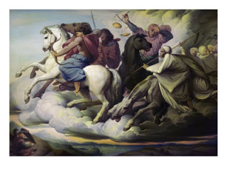

Saddled up and not sparing the whip: The Four Horsemen of the Apocalypse.
"If they're hungry, they can eat grass, or their own dung, for all I care." --
Andrew J. Myrick, a trader affiliated with the notorious mid-19th Century "Indian Ring," responding to complaints from Sioux that they were starving on the meager, worm-ridden rations provided by the Indian agency, August 15, 1862.
Andrew Myrick was a trader working at the Lower Sioux Agency in southwest Minnesota when desperate Chiefs representing the Sioux arrived, pleading for food. Thomas Galbraith, the federal Indian Agent, wasn't inclined to help.
The Chiefs had no money, and Galbraith had better business to attend to than helping out a bunch of starving Indians. Galbraith's business, and Myrick's too, was to maximize profits realized through the federal Indian management system. This meant padding expense vouchers, arranging kickbacks, distributing spoiled or otherwise unusable rations to Indians, and generally finding ways of milking the federal subsidies to their advantage and that of their allies.
This institutional corruption would eventually become known, under President U.S. Grant, as the "Indian Ring." In 1862, with Washington's attention focused on the conquest of the Confederacy, an embryonic form of the Ring was already in operation, sowing misery among the Sioux that blossomed into a full-scale uprising that would claim the lives of hundreds of settlers.
It would also lead to the largest mass execution in American history, the hanging -- on Lincoln's orders -- of 38 Sioux Indians convicted by a military commission, a Barrelhead tribunal in which the average "trial" lasted ten minutes. The original orders called for the public execution of 3,000 Sioux; conscious that such a spectacle would alienate world opinion, but eager to placate demands for vengeance from Minnesotans, Lincoln modified his instructions to allow the hanging of 38 and the mass expulsion of the Sioux from the state.
The Sioux Uprising was the predictable result of federal policy. Under Lincoln the federal government reneged on solemn treaty "promises" to pay the Santee Sioux annuities totaling $1.5 million for their lands. Lincoln likewise authorized additional land grabs and incursions by illegal immigrants -- now called "settlers" or "pioneers" on lands supposedly set aside for the Santee.

When crop failures reduced the Santee to starvation, they sent emissaries to Galbraith to plead for access to food supposedly stockpiled on their behalf pursuant to treaty. They were met with Galbraith's pretense of punctiliousness (he insisted, incorrectly, that the food could only be bought by the Sioux, rather than given to them to alleviate the famine) and Myrick's triumphant, bigoted sneer.
Roughly a week after Andrew Myrick threw his taunt into the gaunt, stoic faces of desperate Sioux chiefs, he was killed in front of his store. His body was found some time later and some distance away; appropriately, the mouth that had been twisted in a sadistic smirk was stuffed with grass.
Nothing can justify the butchery of innocent people committed by the rampaging Sioux, but the fury that fueled those atrocities reflected the desperation of trapped, starving people, and that fury could have been extinguished had the Feds dealt honestly with the Indians.
"Unlawful enemy combatants" sentenced to death by military commissions: 38 Sioux are executed in December 1862.

In a letter to Abraham Lincoln amid the uprising, George A.S. Crooker, a critic of the Indian system, lamented "the cohesive power of public plunder [that] cements rogues together stronger than party or any other ties." By abetting the misery of the Indians, the Feds had "not only cost a large sum of money but ... deluged our western border in blood."
A similar verdict was rendered by Episcopal Bishop Henry Whipple of Minnesota. Disgusted by a system that immiserated the Indians while enriching corrupt federal Indian Affairs officials, likewise warned that public plunder of this kind "'commences in discontent and ends in blood."
I don't know what it says about the way my mind is wired, but I was driven to reflect on the 1862 Sioux Uprising by the news that the Regime plans to bail out Fannie Mae and Freddie Mac. Perhaps that's because few if any institutions so perfectly embody what Crooker, as quoted above, described as "the cohesive power of public plunder."
Then again, perhaps it's because I sense dynamics at work today similar to those that led up to the rampage: Crop failures, an increasingly impoverished population (Americans, burdened with debts much larger than they realize, are actually poorer than 19th Century Indians), a federal government entirely uninhibited by law and utterly brazen in deploying its power on behalf of the politically connected uber-rich, at whatever expense to the rest of us. Or maybe I'm just looking for an excuse to get my Little Crow freak on.

However the connection was made between that 19th century tragedy and the one unfolding today, there is one unambiguous theme binding them together. The Official Message now, as it was then, is this: The Important Persons Who Matter will be taken care of; those of you who are mere people can eat sh*t and die, for all we care.
Right now, Fannie and Freddie are being backstopped by the Feds; eventually, they will be bailed out and then fully nationalized (developments I predicted in detail more than four years ago). Among Those Who Matter to the architects of this new entitlement program for the super-rich are the oligarchs and princelings who run China's banking system.
Financial analyst Mike Shedlock of SitkaPacific Capital Management points out: "There is $376 billion in Chinese agency bond holdings subject to taxpayer bailout proposals...." "If China and Japan were dumb enough to invest in US agencies," continues Shedlock, "then China and Japan should suffer the consequences, not US taxpayers."
From the perspective of our rulers, however, the US taxpayers are the very last link in the Great Chain of Being. Beijing must be placated; after all, they're the ones paying for Washington's imperial errands in Iraq, Afghanistan, and elsewhere.
Fannie, a creation of FDR's corporatist New Deal, and Freddie, its Great Society bastard offspring, supposedly exist to help middle-class Americans and those who aspire to that status buy affordable housing. In fact, they have been indispensable instruments in the perverse alchemy whereby mortgage debt is transmuted into profitable securities and derivatives.
In fact, if I'm not mistaken (given the opacity of the subject, I probably am, along with everybody else), Fannie and Freddie might have pioneered the art of "securitizing" loans of different qualities and risk levels, owing to changes made by Congress in their regulations in 1989.
That's right: Fresh from the S&L catastrophe, Congress loosened the regulatory reins on Fannie and Freddie for the specific purpose of channeling investment into those "government-sponsored entities."
A few years later Alan "Destroyer of Worlds" Greenspan began to pump "liquidity" into what would become the Housing Bubble. Fannie and Freddie bought practically every mortgage it could find. Meanwhile, the upper management of those GSEs -- as was the case with Enron, Tycho, WorldCom, Global Crossing, and other notoriously corrupt corporations -- brazenly and habitually mis-reported earnings in order to enhance their annual bonuses.
In June 2003, Freddie Mac was forced to own up to $5 billion in misrepresented earnings over the previous three years; the result was a plunge in stock value that essayed a course quite similar to the typical waterfall.

More than a year earlier, St. Louis Federal Reserve President William Poole warned that Fannie and Freddie "hold capital far below that required of regulated banking institutions" -- a truly shocking statement, when it's remembered just how little capital "regulated" banks are required to hold -- but Poole's warning was kept from the public for months.

Fannie was forced to remove CEO Franklin D. Raines and CFO J. Timothy Howard. Congressional hearings were called, and a report eventually produced, documenting that "extensive fraud" had taken place at Fannie for the express purpose of lavishing bonuses on top executives; Raines, for instance, collected $52.8 million in bonuses between 1998 and 2003.
The objective of Fannie's fraudulent math was to boost the company's Earnings Per Share (EPS) to a level suitable to justify extravagant executive bonuses. In 2000, for instance, the target was an EPS of $6.46. Just as the Bush Regime "fixed the intelligence around the policy" of war with Iraq, Fannie Mae fixed the accounting around the objective of executive bonuses, and created "earnings" figures accordingly.
"By now every one of you have 6.46 branded in your brains," ranted one Fannie official in a 2000 motivational harangue for employees. "You must be able to say it in your sleep, you must be able to recite it forwards and backwards, you must have a raging fire in your belly that burns away all doubts.... Remember, Frank [CEO Franklin Raines] has given us an opportunity to earn not just our salaries, benefits, raises ... but substantially over and above if we make 6.46. So it is our moral obligation to give well above our 100% and if we do this, we would have made tangible contributions to Frank's goals."
That speech -- something of a cross between the "always be closing" lecture from Glengarry Glen Ross (definitely not family-safe) and, what's much the same thing, a cult indoctrination session -- was delivered by Sam Rajappa, Fannie's Senior Vice President for Operations Risk and Internal Audit. His audience was composed of Fannie's internal auditors. These were the watchdogs who were supposed to preserve the integrity of the company's bookkeeping -- and here they were being told that the unassailable Prime Directive was to reach, by any means necessary, an EPS of 6.46 in order to justify bonuses.
Under Raines, Fannie -- its board larded with political luminaries, many of them former Democratic politicians and White House aides under Bill Clinton -- was guilty of tax-subsidized accounting fraud that dwarfed the crimes committed by Enron's "smartest guys in the room." Rather than going to prison, however, Raines was the beneficiary of a settlement involving the surrender of a small portion of his corrupt earnings and some now-worthless stock options.
Just as some financial institutions are "too big to fail," some crooks are too big to prosecute. After all, why make life needlessly difficult for a political insider like Raines, when the taxpayers take the fall?
Many analysts claim, plausibly, that the failure of Fannie and Freddie -- which have in excess of $5 trillion in debts -- would mean that no one could buy or sell a house in the United States. This underscores just how deeply cartelized the housing market has become thanks to the fascist policies imposed on it under the New Deal.
The failure of the GSEs would likewise ignite a holocaust in the global derivatives market -- a prospect that helped precipitate the Fed's bailout of Bear Stearns a few weeks ago. But the crisis Poole predicts is unavoidable. This is why the Fed is prepared to monetize Fannie and Freddie's debts if investors don't play the role written for them by throwing their money into those insolvent, hopelessly corrupt, incurably debt-ridden GSEs. So far, investors have not warmed to the opportunity. Which means that Ben has his helicopter fleet revving its engines.
It seems likely that the political class will do whatever it can to try to hold the collapse in abeyance until after this fall's election. Owing to the analysis of people much better informed than myself, I suspect that the crisis will erupt in September of this year, although I would be tearfully grateful if my fears fail to materialize.
Bank run: Customers of the Pasadena-based IndyMac Federal Bank -- which was taken over by the FDIC just days ago -- wait to pull their money out of that failing financial institution.
Already, Americans are beginning to queue in front of banks and other financial institutions like hungry Santee Sioux lining up in front of federal storehouses in the forlorn hope of receiving food rations.
Even if the inevitable collapse of Fannie and Freddie is deferred for a season, there will be ample opportunities for smaller financial institutions -- and even some very large ones -- to fail.
Is this "It" -- the Big It many of us have anticipated with growing dread since the U.S. effectively declared bankruptcy in August 1971?
I haven't a fraction of the wisdom to say for sure. I will say this: When the Big It happens, It will look an awful lot like this.
While not neglecting the political dimension of our predicament, we would be suicidally foolish not to be making practical provisions to withstand a full-spectrum political and economic meltdown. This would include securing the material means for physical survival, as well as networking with like-minded people to provide mutual support in the event of severe economic dislocations and (God preserve us) social turmoil.
If you don't live near family, and can afford to move closer to them, do so.
This may not be the Big It. If it is, and we're not ready, we'll be left to dine on grass, or worse.
 Available now!
Available now!Dum spiro, pugno!
25 comments:
"we'll be left to dine on grass, or worse."
We needed to make a conversion "Conversion from Paper to Gold". Instead we have chosen perhaps unwittingly (or not unwittingly) to wait and "dine on grass" despite the warnings of Dr. Paul. Now we will get to dine on grass and worse.
This reminds me of Nebuchadnezzar.
We are a proud nation but we will be abased.
Didn't the Wall Street Journal run an article recently, advising Americans to stock up on food supplies? Normally the establishment dissuades, condemns and ridicules "hoarding". Very interesting.
Yes,indeed...
We have been economically and commodity "ENRONized".
Out here on the Lone Prairie soil fertility is being systematically "CARTHAGEd". This once rich grain producing region - for reasons not yet fully disclosed or proven - has become so 'salt' laden that increasingly only genetically modified seed will germinate and grow in its 'hostile soil'.
A few head of livestock require the independent farm operation to become "Premise Registered" with the Federal Government. A 15 digit number identifies one's 'Premises' - no longer one's farm or ranch or homestead - which is GPS coordinated and satellite monitored. USDA calls it "remote sensing".
usdaremotesensing
This perverse partnership with the government will eventually mandate the rfid tagging or chipping of every animal - including hens, rabbits, llamas, & horses - and an accounting via electronic communication of any change in the inventory within a 48 hour period.
The Amish of Wisconsin are looking to Venezuela as a future home.
will,
i hope you don't mind me posting this...
all,
check out:
www.survivalblog.com for good tips, and:
http://www.survivalblog.com/2008/02/from_the_survivalblog_archives_1.html
rick
How I love Nebuchadnezzar's great- hearted repentant testimony of the 'everlasting dominion' of the King of heaven and earth!
He had been given one year to heed Daniel's counsel:
Daniel 4:27
"Wherefore, O king, let my counsel be acceptable unto thee, and break off thy sins by righteousness, and thine iniquities by shewing mercy to the poor; if it may be a lengthening of thy tranquillity."
At the end of twelve months the unrepentant Nebuchadnezzar declared:
30 "...Is not this great Babylon, that I have built for the house of the kingdom by the might of my power, and for the honour of my majesty?
31 "While the word was in the king’s mouth, there fell a voice from heaven, saying, O king Nebuchadnezzar, to thee it is spoken; The kingdom is departed from thee.
33 "The same hour was the thing fulfilled upon Nebuchadnezzar: and he was driven from men.."
Apparently, neglect of the 'poor and needy' is the greatest offense in the sight of God.
Ezekiel 16
"48 As I live, saith the Lord God, Sodom thy sister hath not done, she nor her daughters, as thou hast done, thou and thy daughters.
"49 Behold, this was the iniquity of thy sister Sodom, pride, fulness of bread, and abundance of idleness was in her and in her daughters, neither did she strengthen the hand of the poor and needy."
Perhaps there is a time of reckoning.
mgmt said "By now every one of you have 6.46 branded in your brains."
Surprised they didn't tip their hand and have a goal of $6.66...
Astounding.
How high can this pyramid go?
Ron Paul would have been the next
Andrew Jackson and ended this
nightmare.
I'll make a prognostication:
Say hello to a slurry of new
regulations on "your" 401k savings
(and equivalents.)
Yes indeed. Somehow they will find
a way to use that wealth to either
save the day or again delay the
day.
In any case, if you think a govt.
controlled retirement account is
secure...you are brain dead.
The Amish of Wisconsin are looking to Venezuela as a future home.
I think the Pacific side in the Andes would be a better place to defend. More like the Swiss in the Alps.
Just looked at the map and the Andes in the north begin in Venezuela
Another great column Will, keep up the good work.
It is not often that I find much if anything to disagree with in what you have to say. Though, this popped up on my radar as I read it:
"Nothing can justify the butchery of innocent people committed by the rampaging Sioux, but the fury that fueled those atrocities reflected the desperation of trapped, starving people, and that fury could have been extinguished had the Feds dealt honestly with the Indians."
I think I would disagree on this point. When one has been driven to the point of watching family and community succumb to starvation and retched conditions - any level of butchery is a reasonable response. Personally, and I've not been shy about stating such before, we need to see some of that butchery now.
I would like to see bureaucrats at all levels very publicly stretch a rope and I'll bring the damn rope. The people that have run us into the ground understand only one thing, the thing they've been dishing out to us for decades, fear. Until they feel the fear in their own bellies they will not stop. They are mostly cowards and I don't think we'd have to hang to many to send them running - but if we cannot muster the courage to do so things will not change. The system is beyond the point of reason, now all we can do is use whatever means necessary to scare people away from being part of it.
This would not be an act of aggression, rather an act of self-defense which are perfectly acceptable under the principle of non-aggression that your (not Bob Barr) libertarian following aspire to.
Brutal yes, but no more so than the oppressors would do to you and I - as your columns over the years so eloquently document.
Sic Semper Tyrannis
For many years now, our federal government has been pursuing a policy of secret warfare against its citizenry. I say warfare. Note the following and see if you can determine a trend:
-Several administrations foster Treaties which send corporate presence and jobs overseas, and that during a time when job hunting was becoming increasingly difficult.
-Just when truckers “had it” with the high cost of “trucking”, the EPA sends down its draconian emissions standards (2007) demanding such changes in the sulfur content of their additives so that many truckers could only look forward to the ruin of their long-standing trucking businesses.
-EPA has proposed increasing those draconian standards over the next three years which will virtually wipe out our trucking industry.
-The CAFTA treaty crushed what little industry was growing in parts of Mexico, destroying small farming and craftsmanship enterprises. Thus, swarms of starving Mexicans risked everything to cross the borders.
-CAFTA also passed the infamous Codex Alimentarius, a old 1960s socialized Medicine hangover for which not even the debauched Johnson Administration nor the irresponsible Nixon Administration could get any support. That measure – now passed by Treaty Law (meaning, it has the alleged status of actually amending the Constitution, according to our Supreme Court), has mandated ALL vitamins and health practices OF ANY SORT, as well as regulation of food, dietary and nutritional aids, helps, and procedures…ALL MUST be placed under FDA guidelines and doctors will be given sole power to write prescriptions for all nutritional helps (such as vitamin C, for example).
-Just when you thought you could retreat into your home and perhaps gain some respite from Uncle Sam, along comes our Supreme Court of unelected judges telling us that they can take our homes and lands through eminent domain any ole time they wish.
-As the nations currency, suffering from continued inflationary stress and resultant devaluation (in turn, leading to a deterioration in the buying power of YOUR earned dollar), the Fed continued to cut the lending rates to the banking industry. Now both dollar and financial sector are drowning in the debt-facilitated Fed directives… and we all suffer further loss in savings.
-Our leading “Presidential candidate” – Mr. Obama – swears to further decapitalize any real earnings from capital gains you might make in his tenure.
-Let’s not forget the Democrats (with many Republicans right behind them) lining up to “increase taxes” in the next 2 years.
-Then there’s the oil reserves laying out there untapped off our shores. Over 3 trillion barrels all told (conservative estimates). We cannot access them according to Congress or EPA, but the Chinese and Cubans CAN. And they are doing so with our knowledge and in our territorial waters.
-Now Congress wants to muzzle the internet, calling pieces like this one “Cyber-terrorism”
-Congress is being asked to address the legal system, citing those who refuse to utilize attorneys and are able to represent themselves in court as “Paper terrorists”.
These last two bulleted items are listed only to demonstrate that those who resist the federal "terrorists" are deemed to be "terrorists" simply because they don't prefer being beaten up so regularly by their "public serpents".
This is just the very tip of the Iceberg… Let's start calling it what it is: “Federal Terrorism”.
Wayne Sedlak, ICHR
Ps. What if there were about 1000 of you out there who wanted to utilize the Net to get your message out to more than just a few people at any given time?
Will, you have hit the nail on the head once again. I just hope that when the day comes that we repeat the history of 232 years ago, you are one of the folks to represent the freedom seekers of this generation. Thank you for you thoughts.
Re the Sioux
Land being the ultimate means of production (to be seized); does it not all come down to land & historic land grabs, by different classes for their own ends, whether private and/or collective, and freedom? With both forms of ownership having potentially positive or negative connotations (for freedom & justice).
ie Depending on context, specifically the absence or presence of oppressive hierarchies of power, inappropriate subsidies, corrupt practices and basic human needs being fulfilled, or not, as the case may be.
Here in the UK we had the Enclosures and the removal of common grazing rights, and the rise of private property ownership as a major engine for the rise of industrial capitalism - presumably akin to the theft of indigenous American land throughout the continent by European settlers.
"The birds have their nests and the foxes have their holes, but the Son of Man hath nowhere to lay his head"
In this light I am interested to know your thoughts on the US Agri-Subsidy system. Here in Europe it now makes up half the EU budget and no-one in power knows what to do about it. Is this not an opportunity for common cause?
And Mr Griggs thanks once again for the powerful blog and your commitment to non-violent action.
I would like to see bureaucrats at all levels very publicly stretch a rope and I'll bring the damn rope. The people that have run us into the ground understand only one thing, the thing they've been dishing out to us for decades, fear. Until they feel the fear in their own bellies they will not stop. They are mostly cowards and I don't think we'd have to hang to many to send them running - but if we cannot muster the courage to do so things will not change. The system is beyond the point of reason, now all we can do is use whatever means necessary to scare people away from being part of it.
This would not be an act of aggression, rather an act of self-defense which are perfectly acceptable under the principle of non-aggression that your (not Bob Barr) libertarian following aspire to.
Amen!
Unfortunately, although the assumption that these people are spineless cowards is certainly correct, their reaction to the very real lethal anger directed at them by the masses will be to unleash the full power and fury of the criminal police state apparatus that is now conducting dress rehearsals of its craft in Iraq, Afghanistan, the Balkans, and (to a more limited extent) small pieces of our own backyard.
As Will has documented in several posts over the last few weeks, the military largesse bestowed upon local law enforcement is not for defense against "terrists", but for domestic "population control." Short of huge numbers of the mercenary thugs who operate this death machine growing brains and consciences and suddenly coming to the aid of the citizenry in the restoration of liberty, I cannot see a revolt such as Anon/SST describes being responded to with anything other than wholesale slaughter. This is most certainly not to say that it should not or cannot happen. I merely say that the parasitic ruling class will not react passively to its own destruction at the hands of Us, the People.
To heck with hating the oligarchs and the other enemies. Instead of investing so much energy in hating THEM, a better idea would be to love US. Jesus said "love your enemy" and turn the other cheek. So, let's give THEM some "tough love", so much their psychopathic hearts won't be able to deal with it.
http://www.somethinghappeninghere.net
And so we must be willing to play a far cleverer game..?
"In this light I am interested to know your thoughts on the US Agri-Subsidy system. Here in Europe it now makes up half the EU budget and no-one in power knows what to do about it. Is this not an opportunity for common cause?"
I'm the third anonymous from the top aka 'buffalo_girl'.
We 'own' (free from debt other than annual property tax) 640 acres in mostly native grassland. It is used for light livestock grazing. A couple of hundred acres are in alfalfa/mixed grass for hay.
When we bought this farm 10 years ago the previous owner had an agreement with the government to keep the hay acres fallow for a set period in exchange for an annual subsidy.
We didn't want the government telling us what we could or could not do so opted out of the contract. That cost us several thousand dollars. We have been under NO subsidy since.
Nevertheless, the federal government is forever urging - even threatening - the independent farm operator to conform ("harmonize") his/her privately owned property into the specific goals outlined by the global economic agenda.
I have talked to farmers who were on the streets during the 1999 Seattle WTO Ministerial Meetings who went there specifically to have their 'marketing' concerns addressed. They were tear gassed, pepper sprayed, and rubber bulleted just like everyone else on the street. Seattle was under martial law the rest of that weekend.
There is not one farm/ranch operator we personally know who could survive on his land one year if the subsidies or bank loans were pulled.
We would be here only as long as we are able to put together the hard cash for taxes and other ongoing expenses. Once any means of generating income is gone, we will be, too.
It is my conviction that the way to 'fight' this perverse system is on a local community level. People must put their skills and backs together to create 'free standing' self-sufficient villages - even within the urban environments. Don't allow government to be involved by accepting grants or subsidies.
Be good. Obey civil laws insomuch as they can be understood at any given moment. Don't allow vices in the community that will attract law enforcement because of 'obvious' behaviors.
If there are things a community cannot produce - say wood stoves - trade with a community that does.
Grow your own food. Learn skills necessary to maintain a basic and acceptable standard of living. Teach one another. Don't establish a 'pecking order' or look to a 'leader' to tell you what to do.
I understand the English farm land lost by your small sheep & cattle producers as a result of the economic devastation caused by F&M is now being bought up by the rich for their 'pretty' estates. Odd how those things work.
Human children get a form of Foot and Mouth. I've never heard tell of 10 K 'Kill Zones' being established in which every child is 'depopulated' because one child turned up at her pediatricians with blisters on her lips and fingers.
Six and one half million animals - mostly healthy - were shot and burned. There is a vaccine for livestock.
Perhaps the good Lord will help "Nebuchadnezzar" aka Babylon to his knees in order to learn to eat grass for seven years. Perhaps, this will be the time in which to reflect and change our way of doing things.
If those who consider themselves 'elite' are brought down along with us I will be convinced it is of the Lord. If they are not, then they have 'engineered' it. One way or the other, we will still need to work along side one another in order to survive.
As far as coming head to head with the 'elite power' - even with hand held missile launchers - we are outclassed. The corrupt system needs to turn on itself (see 2 Chronicles 20). We need to build a better system based on personal freedom, family, community, & privately owned property.
"Many analysts claim, plausibly, that the failure of Fannie and Freddie -- which have in excess of $5 trillion in debts -- would mean that no one could buy or sell a house in the United States."
Well, that's an absurd overstatement. After the 2001 crisis in Argentina, when mortgages became unavailable at any price, property sales still took place. But they took place in U.S. dollars, all in cash. And naturally that meant that sales volumes and sales prices were much lower than if financing had been available.
Which leads to my point -- the U.S. fedgov provides taxpayer-subsidized financing not only for mortgages, but also for college education and health care. And -- exactly as you would expect -- the availability of "easy money" financing has driven up the prices of houses, tuition and medical care at rates well above the CPI, for several decades now.
In other words, the horrendous price escalation has wiped out any benefit provided by the easy financing -- except for the lenders, who continue to collect escalating amounts of interest. Add the costs of bureaucrats to run these programs, and they represent a net loss -- a negative benefit to cost ratio.
Bottom line, the centrally-planned U.S. government financial sector is a value subtractor, just as the former Soviet Union's economy was on a wider basis. Run a large value-subtraction sector for enough decades, and pretty soon you can do real damage to the quality of life.
Not only that, but the flippant U.S. claim to being "the world's only Superpower" already sounds antique. Like an empty house, the alleged Superpower has an unkempt lawn and peeling paint. Vandals and termites have been at work, and there's little left but a looted shell.
But a country that worships a mass murderer like Abraham Lincoln with a marble shrine never did have much of a future, did it? That five-dollah bill with his gaunt visage on it will barely buy a cup of designer coffee anymore, and soon not even a pack of chewing gum. It wasn't meant to last.
The very best outcome of this
would be the total and
final collapse of the fiat dollar.
Praise the Lord.
Let's put the fed gov into
receivership and sell it to the
highest bidder, personnel included.
Seriously, it will hurt us for a
while but it will devastate the
fed gov.
Who will buy their bonds or accept
their notes?
Who will obey their law?
This debt is not owed by our State
Houses, it is owed by the fed gov.
Since the Constitution has been
nullified by the fed anyway, it's
time to pull the Articles of
Confederation back out of
mothballs.
Texas can pay its bonds, so can
Florida and Alabama.
We can take up a collection for the
Navy, Airforce and Army.
Definitely not Homeland Sec. or
CIA. Let it all die on the vine.
It really would be the year of
Jubilee!
Praise God. Pull it down Lord.
Oh, and by the way.
YOU don't owe this money either.
Again, the debtor in all of this
is the FEDERAL GOVERNMENT. It was
the fed gov that borrowed all of
this money in the first place
(from the private FED Reserve.
Let THEM eat cake.)
Their only way to get it back is to
steal it from us.
Well, looks like they have just
about run out of wealth to steal.
HA!
"Freedom's just another word for
nothin' left to lose."
-Chris Christopherson
Let 'em have it and good riddance.
I am LOVIN' this!
Hi Buffalo Girl
Thanks for the background info on how things are where you farm. You are right about a lot of things IMO, especially the tragedy of what the gov did here about F&M, it was disgusting. I am encouraging a joined up campaign against EU farm subsidies but it is very early days yet, interestingly it is a topic that unites good people on both left and right.
One question, I'm not clear on what difference is between you and others, how you are able to survive but others are not, without subsidies - is it simply down to the fact that they have become dependent?
Over here some subsidies go to small holdings, genuine co-operative endeavours and organic producers using older safer saner methods of farming but over half goes to big -corps or vast land holders. Much of it is not even to farmers, but is accounted as 'corporate export subsidies' which is basically private corporate subsidy, plain and simple protectionism. In the UK, the biggest recipient of subsidies is Tate and Lyle, a company that got rich on the slave trade. What awful irony that the subsidies they receive prevent farmers in the poorest sections of the world from competing. I imagine Adam Smith would not be impressed.
At the same time 'they' impose their private utility investment plans on these same economically defenceless countries, to the mantra of the doctrine of the free market even though when 'we' had nascent industry, in the early stages of industrial capitalism we jolly well protected them.
UN - believable!
Thanks also for the suggestions re solutions, I agree that private property is important, essential even.
However, alongside the necessity for everyone to have their own plot (as promised in Isaiah if i remember correctly) self-evidently there should also be certain constitutionally protected (ie untouchable) community-owned assets in every community; so as to allow everyone regardles of private wealth access to power, shared use of key resources, and therefore social justice and a chance to get on.
Thanks also to others re info about debt collapse, fiat dollar etc. All quite illuminating
Best wishes, Mark
Buffalo Girl... Right on!
What you say is absolutely correct. That people "should" pull together and shut their ears to the FEDS. I've heard tales that go back to the depression and how the government has manipulated and cajoled farmers ever since. Possibly long before even that sad event. I even know folks back in Texas who purchased land for the express purpose of receiving those fallow land subsidies. To them it was an "investment". A money maker but off the sweat of others. They wouldn't bat an eye at how corrupt it all seems because, well, they were more market savvy than the rest of us... so, tough! When people work together as you illustrated then and only then can you expect to separate yourselves from Leviathan. And I'm sure THEY don't like that one bit.
"One question, I'm not clear on what difference is between you and others, how you are able to survive but others are not, without subsidies - is it simply down to the fact that they have become dependent?"
Mark,
Most farms still in existence in our area are third and fourth generation operations. They are the ones who survived the 1930's depression - who knows how. I imagine during the WWII years they put the land into crops usable in the war 'effort' like hemp, pulse crops, grains, flax, etc.
In the 1950's and 60's a few people around here became pretty prosperous growing hard red winter wheat. These are people originally from the Ukraine and know wheat.
My husband asked an older couple what factor more than any other contributed to the loss of family farms. The answer was, "big equipment and the need to farm more acreage in order to pay for the equipment".
The US government with the help of corporate entities came up with a plan to eliminate family farming in the late 1950's. You can read it here: adaptveprgrmforag
There is a data base of farm subsidies in the US here:
subsidies
We came to this life from the outside and with enough cash to buy the land with a bit over. I was raised to never, ever borrow against home or land. Own it.
We came ignorant of the greater realities of our time thinking we were escaping Babylon to live out some idyllic dream on the land before we became too old to putter.
Within two years we discovered we are actually on the front lines of the very real struggle against global fascism.
We started out with a few registered sheep with the thought of developing a small wool enterprise. The global push for animal id has made me withdraw from expanding my flock so much I need to move large numbers of sheep or draw bureaucratic attention.
We raise nearly everything we need to subsist and earn some income leasing grazing land to a big cattle operator. As long as there are 'big' cattle operators we will have some income.
Insurance and energy expenses are what will take us down. Our equipment is small and old, but we still need diesel for our two tractors and propane to supplement wood heat in winter. We live where it is often 20-30 below zero F. in December & January.
I shouldn't be taking up Will's blog to run on. Here's my email. Hope everyone else is on to the next article. I don't imagine anyone cares anyway.
buffalo_girl
Mark,
I don't have a website and it doesn't seem that my attempt to post an email address worked. Here's what might work if you want to talk farm stuff.
Go to nonais to get some background on what small farm operators are struggling with over the National Animal ID Scheme.
I post as donna. Send a private message to Walter - the Vermont farmer putting together this site. Tell him you would like to have me send a private email to you in England. He will forward your address to me. It may take awhile as he is very busy.
In the meantime you will find a wealth of information and documents on how the global economic plan is impacting farmers in the United States.
Liberranter wrote:
"Unfortunately, although the assumption that these people are spineless cowards is certainly correct, their reaction to the very real lethal anger directed at them by the masses will be to unleash the full power and fury of the criminal police state apparatus that is now conducting dress rehearsals of its craft in Iraq, Afghanistan, the Balkans, and (to a more limited extent) small pieces of our own backyard."
I agree with your assessment that the full power of the state would be turned against such actions. The problem is, as I see it, it is going to happen anyway. If we wait too long, the incremental encroachments will have weakened us to the point where resistance is no longer an option.
I imagine the founding fathers had such thoughts in their time facing their Leviathan. The choice may ultimately be to die on your feet or die on your knees. It is truly a shame that it has once again come to a state of affairs where good men are pondering these options.
McCain and Obama will both keep us at war. There will eventually be a need for more warm bodies, but there will be no more volunteers. They know this. That's why both of them will be stressing "national service" in the coming months and years.
http://rightwinghour.podbean.com
Post a Comment